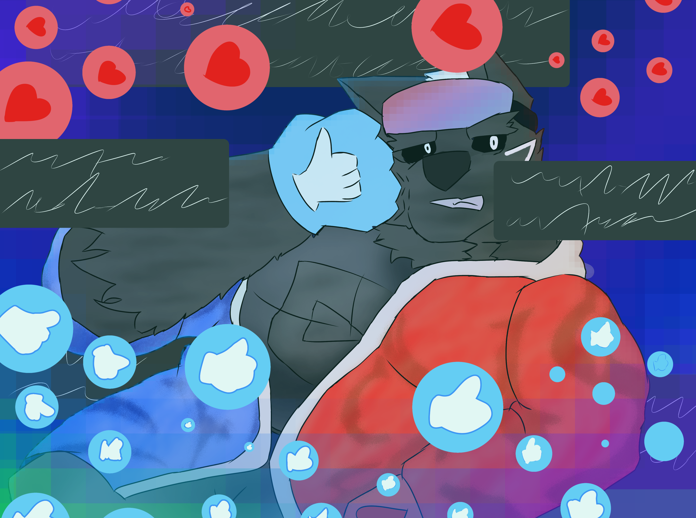

un lugar en un mundo en donde los personajes pueden ver verciones destruidas,sin sufrimiento,nostalgia,asta personajes de otros mundos,universos e incluso formas distintas, pero ¿aun funcionan para defenderse?¿pueden apoyar a sus compañeros?
The Internet is a monster

Okura, el internet puede ser maravilloso pero dentro de ese mundo tambien hay mouestros que solo se guian por numeros sin sentido de ¿verdad? para que quieres un numero Okura ¿que quieres de ese mundo?